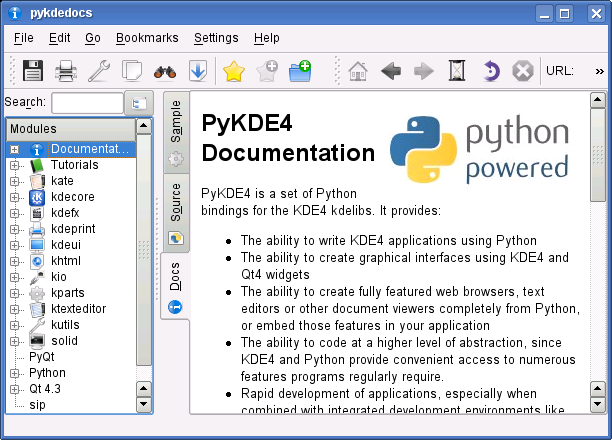
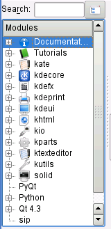
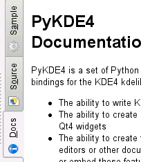
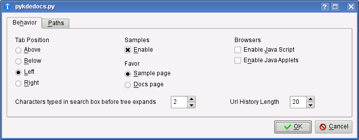
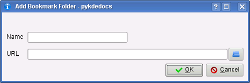
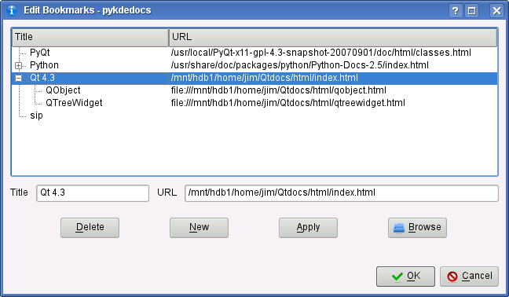

pykdedocs is the example/tutorial/documentation browser that ships with PyKDE4.
pykdedocs allows you to:
pykdedocs will load HTML files from the internet or launch external viewers for non-HTML links,but it is not intended to be a full-featured, secure web browser. It isn't recommended for use in doing your online banking or submitting credit card numbers, and may not load some types of web pages (or crash). pykdedocs uses KHTMLPart, which is capable of running JavaScript or JavaApplets, but ships with both of those capabilities disabled. You can enable them in the Settings dialog.
pykdedocs ships with predefined folders for PyQt, Qt, Python and sip, but no links, as the location of documentation for these is not consistent nor easy to discover automatically. See "Bookmarks" below on how to add links and bookmarks to these folders.
pykdedocs is written entirely in Python using PyKDE4 (our favorite dog food), and hacking is encouraged. Improvements submitted will be considered for future versions.
Mormally, pykdedocs will install as an executable along with your PyKDE4 installation. To install pykdedocs from the PyKDE4 tarball, change (cd) to the top level PyKDE4 directory and as root run:
pykdedocs requires installed KDE4, PyKDE4 and PyQt4 to run. It will run under KDE3 if KDE4/PyKDE4 are installed, even if KDE4 is not running.
python installdocs.py
The installer copies files to known locations on your system.
To use pykdedocs, simply type:
pykdedocs
at the command prompt, or create a menu entry or taskbar icon to launch pykdedocs. At present, there are no pykdedocs specific command line options.
|
The pykdedocs ui consists of a tree view at left, a viewing area at right, a toolbar and menu above and a status bar below. The tabs on the viewing area can be repostioned as you prefer (see "Settings" below) |
|  |
|
The tree view is the index to all of the resources pykdedocs manages - documentation, tutorials, samples, PyKDE4 class documemtation and external documentation (with bookmarks). The entries in the tree are all expandable and link to views of the various resources available. The tree entries with icons are hardcoded into pykdedocs and represent the following:
Below the permanent tree entries is a user-defined area. It can be used to link to external HTML documentation (like Qt, PyQt4 or Python documentation), to collect links to other external (including online) resources, and to store user-defined bookmarks. Above the tree is a search box. It will filter the tree entries to those which contain the substring entered in box (for example, "List" will match both KListWidget and KFileList). After a threshhold number of characters has been typed (default is 2, can be configured), the tree will be expanded to show all matches, and as more characters are typed, non-matching entries will disappear. To restore the entire tree, clear the search box using the small button at the left of the text entry area. Next to the search box is a button which will collapse any expanded nodes back to the state shown in the image at left. |
 |
|
On the right side is the viewer area. The three tabs shown are permanent tabs and can't be closed. The tabs represent the following resources:
If you expand a PyKDE4 module node in the tree view, and select a class, the sample (if any - classes with samples are flagged in the tree view) will appear in the sample tab, and the display will automatically switch to this tab (you can also disable samples, or cause the display to switch to the "Docs" tab when a class is selected - see "Settings"). The source code for the sample will appear in the "Source" tab and the documentation for the class will appear in the "Docs" tab. You can save the source code or documentation to a local read/write directory you specify by selecting File | Save from the main menu, or clicking the "Save" button on the "Source" tab's display. Some samples open dialog boxes or run external programs - the "Sample" tab will provide a button to launch the dialog or program in those cases. All other top level nodes in the tree view (except "Documentation" and the PyKDE4 module nodes) will open a new tab in the view area. For example, clicking "Tutorials" in the tree view will open a "Tutorials" tab. Tutorials also use the "Sample" tab to present a button to run the tutorial code, and use the "Source" tab to display the full source code for the tutorial section being viewd. The user-defined nodes, or bookmarks collected under user-defined nodes, also open a new tab for each user-defined node. The "Sample" and "Source" tabs are unaffected by the user-defined nodes. The location of the tabs (left, as shown, or top, right or bottom) is can be changed in the "Settings" dialog. All tabs except "Sample", "Source" and "Docs" can be closed by right-clicking on the tab and confirming in the popup dialog. The back and forward buttons on the toolbar are specific to each tab, as is the history button next to the back and forward tabs. The home button on the toolbar is only available for user-defined tabs. |
 |
|
The Settings dialog items are fairly self-explanatory
Changes are automatically saved when you click "OK". The "Paths" tab allows you to change the path to the pykdedocs directory tree, or the default path to which pykdedocs will save source code. |
|  |
|
You can create your own folders and bookmarks to link to other HTML documentation. To create a new folder in the tree view, choose Bookmarks | New Bookmark Folder from the main menu or click the New Bookmark Folder button on the toolbar. Enter a name for your new folder and the URL it links to. The button at the left will pop up a file dialog for local files, or you can enter any URL (like a website link). If the URL specified isn't a link to a .html file (for example a .pdf or .txt file), pykdedocs will open an external viewer when the node in the tree view is clicked. If you leave the URL field empty, pykdedocs will still open a new tab when the node is clicked, and you can still add bookmarks to the folder. |
|  |
|
You can also add, edit or delete the folder name and URL, or edit and delete (but not add) bookmarks under the folder and their URLs in the Edit Bookmarks dialog (Bookmarks | Edit Bookmarks in the main menu, or toolbar button). Highlight the folder or bookmark to be edited or deleted, then edit in the text boxes if desired, and press Apply or Delete as appropriate. No changes are saved until OK is clicked. To create a new folder, click New and then enter the informantion. The Browse button pops up a file dialog for locating local files. |
|  |
| Prev | Table of Contents | Next |
| Using the Class Reference | PyKDE4 and QtDesigner |